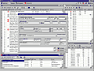

|

Август-сентябрь 2000 г.
| |
Donor - регистратура
Система автоматизации регистратуры Областной станции переливания крови, г. Сумы.
Ведение учета сдачи крови (более 30 тыс. записей), поиск донора по нескольким
критериям, автоматическая проверка невхождения в "черный список" или
контактирования с лицами из "черного списка", печать направлений и справок,
архивирование данных.
Авторский проект.
Реализация: Borland C++ Builder 5.0 (BDE, Paradox).
|